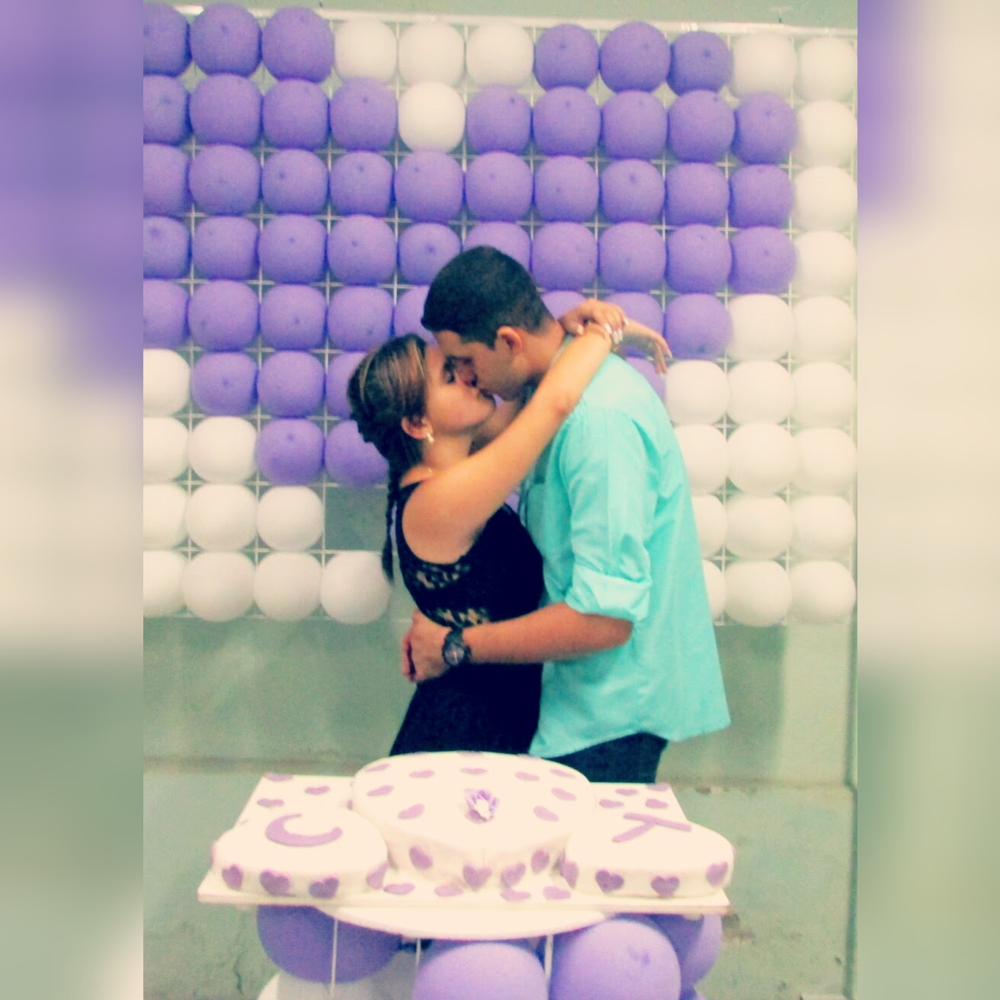

O que rolou após eu te pedir em namoro? Você lembra?
Bom, se caso não se lembrar eu lhe recordarei.
Vamos lá!
Foi assim, te pedi em namoro no nosso local maracado naquele dia 19 de maio de 2014, e você já achou que estávamos oficialmente
namorando. Porém eu queria ir mais além, gostaria de conversar com seu pai sobre isso e pedir sua mão em namoro a ele.
Na época você tinha 14 anos, ia fazer 15 no dia 27 do mesmo mês e o medo te tomou de uma maneira que você não deixou eu pedir
seu pai de início.
Então assim foi, você completou seus 15 anos, e passados 12 dias nós concordamos eu eu ir na sua casa e falar com o seu pai. Lembro
como se fosse hoje: dia de Domingo, jogo do flamengo e eu estava marcado pra ir lá a tarde (não lembro a hora).
Deu a hora marcada, eu saí de casa e fui até a sua. Chegando lá seu pai estava na casa da Tia Fátima, e eu esperei um pouco pra ele
vir de encontro a mim. Quando ele saiu de lá, me chamou e fomos pra garagem da sua casa.
Chegando na garagem seu pai puxou uma cadeira vermelha e jogou no chão pra me intimidar, mas eu continuei no objetivo de pedir sua mão.
Sentei na cadeira, e comecei a dizer ao seu pai as minhas intenções e foi aí que ele disse: "A Carol é grande mas ela é só uma criança"
e você ria do meu lado enquanto eu soava e me dava frio na barriga.
Foi aí que eu percebi que no momento eu que eu estiver nervoso ou neessitando de algo, você vai me ajudar apenas com um sorriso. Foi Depois
que eu te vi sorrir que me deu a força para continuar o pedido de namoro.
Então conversamos e aí seu pai deixou você namorar comigo. Você toda feliz e realizada e eu ainda em dúvida se era realmente isso que eu queria.
Nossa Primeira Vez Namorando Oficialmente
Depois de ocorrer tudo isso a tarde, a noite fui na sua casa pra gente "namorar". Lembro-me que ficávamos olhando um para o outro
e só sabíamos rir e tirar foto, porque ainda não tínhamos assuntos para falar (era engraçado kkkk).
Porém o tempo foi passando e fomos criando um vínculo tão forte, uma ligação tão linda que assunto não faltava mais.
E aí o tempo passou, e passou bem rápido e aquela escolha que eu não tinha certeza se seria pra vida toda é a escolha mais perfeita
que existiu na minha existência.
Por isso eu sou grato de você ter me escolhido, porque enquanto eu não via nada em mim você viu o bastante que fez você me amar já naquela
época. Obrigado por existir em minha vida! Você é a chave principal por eu ser quem eu sou hoje.
Não sou perfeito, mas sempre busco melhorar para não te perder!
Você me disse esses dias que tinha medo de não conseguir achar alguém que te completasse, e eu nunca te contei isso mas esse era o meu
maior medo. Medo de não ser bom o bastante pra alguém, medo de ser incapaz de ser recíproco.
Mas você me mudou e me fez amadurecer, me fez se sentir amado, cuidado sabe. O meu maior medo agora é de perder a única pessoa que me
ama por quem eu sou.
Por isso que por você eu melhoro quantas vezes for necessário.
Obrigado por existir em minha vida e me mostrar o quanto você é especial pra mim!
Que seja sempre nós até o fim de nossas vidas!
